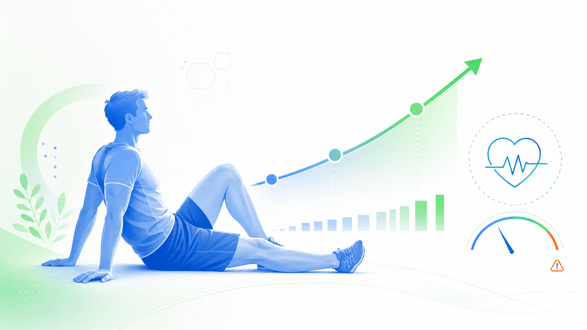
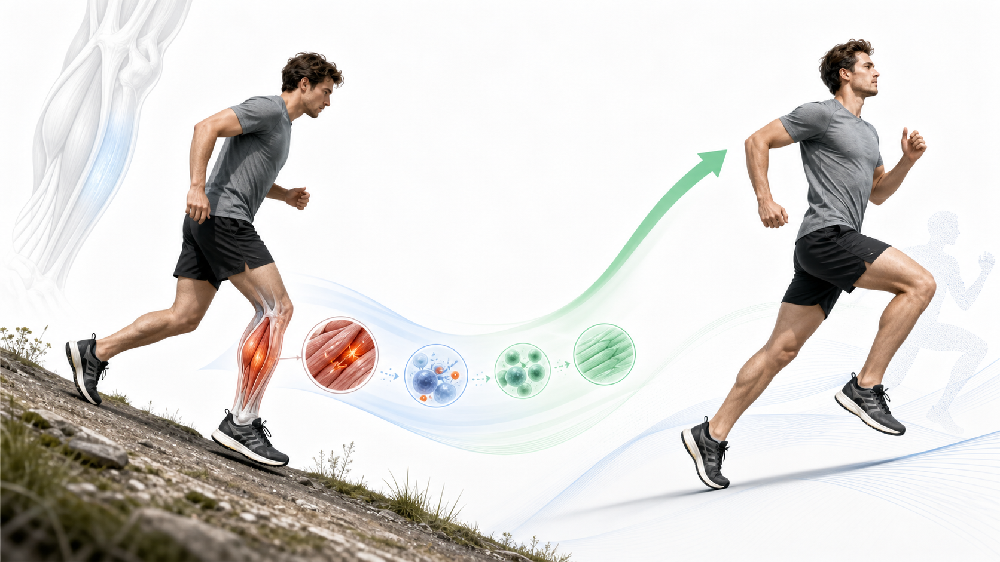

适应性与过度训练
口诀：刺激先下，恢复再上；短期可还叫 reach，长期还不上才危险；心率、HRV、握力、睡眠一起看趋势。
- 超量恢复是进步本质。
- Overreach 短期可恢复，OTS 可拖数周到数月。
- 晨起心率升高、HRV 下降、握力下降提示恢复压力。
复习当天早上新知识，并按艾宾浩斯间隔回看 Day 36、Day 34、Day 30、Day 23。
今天的核心线索：疲劳分中枢与外周，DOMS 是离心负荷后常见的 24-72 小时延迟反应，主要来自微损伤与炎症，不是乳酸滞留。


口诀：刺激先下，恢复再上；短期可还叫 reach，长期还不上才危险；心率、HRV、握力、睡眠一起看趋势。

口诀：一次运动心跳快，收缩压上血改派；长期训练心更省，Fick 两头记，泵血乘取氧。

口诀：频强时类，容量进阶；一五零有氧，两次抗阻；心率三档，目标配方。

口诀：十秒靠 PCr，两分钟看糖；乳酸不是脏，阈值看收放。
疲劳限制当下输出，DOMS 解释训练后一到三天的延迟酸痛。
下坡跑和慢速下放深蹲都增加离心负荷，更容易触发 DOMS。
新动作先小剂量暴露，利用反复 bout 效应，再逐步增加容量。
单点锐痛、明显肿胀、麻木或无力加重，不按普通酸痛处理。